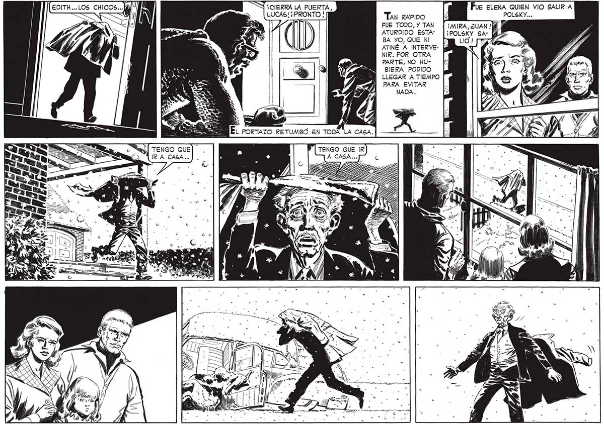

(717 Ebo Y ¡CIERRA LA PUERTA, LUCAS! ¡PRONTO ! / ÉL PORTAZO RETUMBO EN TODA 'LA CAS Á, Fue ELENA QUIEN VIO SALIR A Tan RAPIDO - POLSKY... FUE TODO, Y TAN y ATURDIDO ESTABA YO, QUE NI ATINÉ A INTERVENIR. POR OTRA PARTE, NO HUBIERA PODIDO LLEGAR A TIEMPO PARA EVITAR 23
